“Are you ready to step inside our memories?”
Nyalakan audio untuk pengalaman terbaik
Kalau diingat-ingat lagi, takdir itu unik banget jalannya.
Aku datang dari SMP Gadingmangu, sementara Dea dan Kak Yayang berasal dari SMPN 1 Dolopo.
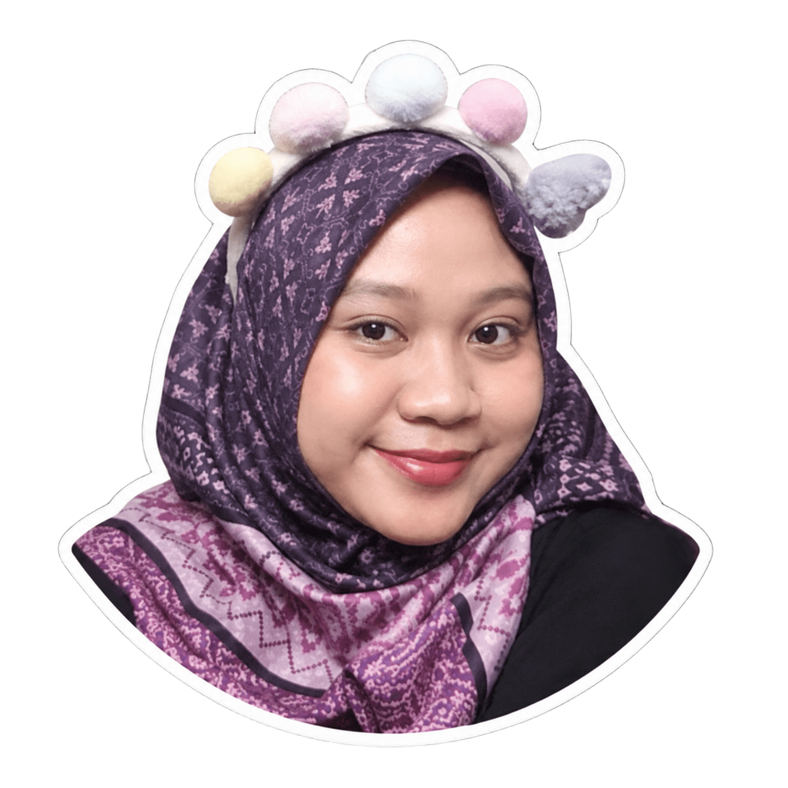
Kak Yayang SMPN 1 Dolopo
Hingga akhirnya semesta menyatukan langkah kami di gerbang yang sama:
SMAN 1 Geger — Masuk di Kelas MIPA 7!
Di kelas MIPA 7 inilah kita pertama kali kenalan. Waktu itu ada salah satu teman kita juga namanya Tsalsta. Dari sekadar kenalan teman sekelas, kita klik banget sampai akhirnya bikin grup legendaris kita:
Nama yang random tapi penuh tawa, awal dari persahabatan yang nggak pernah kita sangka bakal sepanjang ini.
Di sekolah, baru tahu kalau ternyata ibunya Kak Yayang itu guru seni tari di SMAN 1 Geger! Dan buah jatuh nggak jauh dari pohonnya: Kak Yayang di kelas jago banget narinya!
Zaman SMA basecamp kita ya rumah Kak Yayang. Tiap ada tugas tari, kita numpang latihan di sana (sambil diajarin tentunya!). Dan salah satu kenangan paling manis: pernah diajak nonton bioskop bareng keluarga Kak Yayang. Hangat banget rasanya!
Momen sedih pertama kita datang pas kenaikan kelas 11.
Waktu pembagian kelas, aku sama Dea tetap sekelas, sedangkan Kak Yayang kepisah di kelas lain.
Karena beda lantai dan beda sirkel kelas baru, komunikasi kita sempat agak merenggang waktu itu... huhu sedih kalau diingat.
Lulus SMA, kabar bahagia datang: Kak Yayang dan Dea sama-sama tembus kampus impian di Malang!
Kak Yayang di Pend. Tari UM, dan Dea di Agroekoteknologi UB.
Sementara aku? Saat itu aku belum beruntung dan harus gap year setahun. Rasanya campur aduk dan sedih ditinggal ke Malang sendirian...
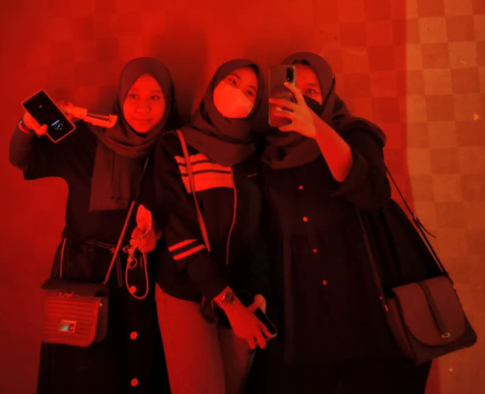
Tapi usaha nggak mengkhianati hasil! Setahun kemudian, aku resmi nyusul ke Malang di Matematika Murni UB! Trio kita utuh lagi!
Di Malang, kita bertiga mutusin ngekos di tempat yang sama: KOS UNGU!
Di sinilah ikatan persahabatan kita jadi erat banget tanpa sekat.
“Bebas mondar-mandir kamar siapa aja tanpa sungkan, kos serasa rumah sendiri.”
Suatu hari kos kita kedatangan anak kucing jalanan. Randomly langsung kita sepakat kasih nama Mocca.
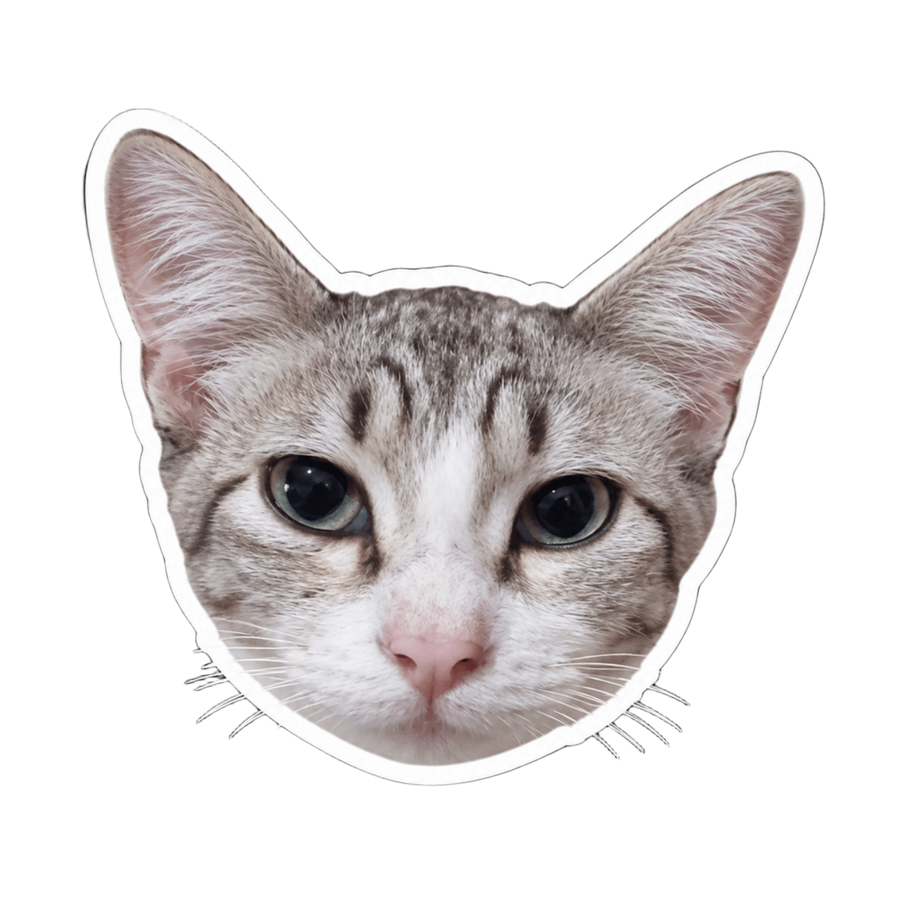
Mocca Kecil
Plot twist-nya: Kak Yayang awalnya gasuka banget sama Mocca! Yang ngurusin pertama ya aku sama Dea.
Eh lama-lama siapa yang paling kecantol? Kak Yayang sendiri! Sampe bucin parah, bahkan tahi-tahinya Mocca pun Kak Yayang yang telaten bersihin wkwkwk!
Sampai hari apes itu tiba: kita ketahuan piara kucing dan dimarahin habis-habisan sama ibu kos! Mocca dilarang masuk dan terpaksa ditaruh luar.
Hari itu hujan deras banget dan Mocca tiba-tiba hilang. Liat Kak Yayang nangis sesenggukan karena kasihan sama Mocca, aku sama Dea langsung tancap gas muter-muter perumahan di tengah hujan buat nyariin si mpus.
Buka dan temukan 3 pasangan.
Momen paling patah hati pun tiba: Kak Yayang selesai kuliah duluan dan harus pulang. Saking sayangnya, Mocca pun ikut diboyong pulang sama Kak Yayang wkwk!
“Waktu Kak Yayang udah nggak di kos, jujur aku sama Dea sering refleks manggil namanya... seakan-akan Kak Yayang masih rebahan di kamar sebelah.”
Sampai akhirnya kamar itu diisi anak baru. Pelan-pelan anak-anak baru mulai berdatangan, dan Kos Ungu yang dulu hangat mendadak terasa asing banget buat kami berdua...
(Oiya Kak Yayang, ada satu pertanyaan dari kami: Mocca sekarang di mana kak? wkwk)
Waktu berjalan cepat. Dea lanjut S2 di UB, Kak Yayang S2 di Surabaya, dan aku berjuang skripsi sampai akhirnya lulus dan meninggalkan Malang tercinta. Sekarang, kita sudah punya kesibukan dan pekerjaan masing-masing.
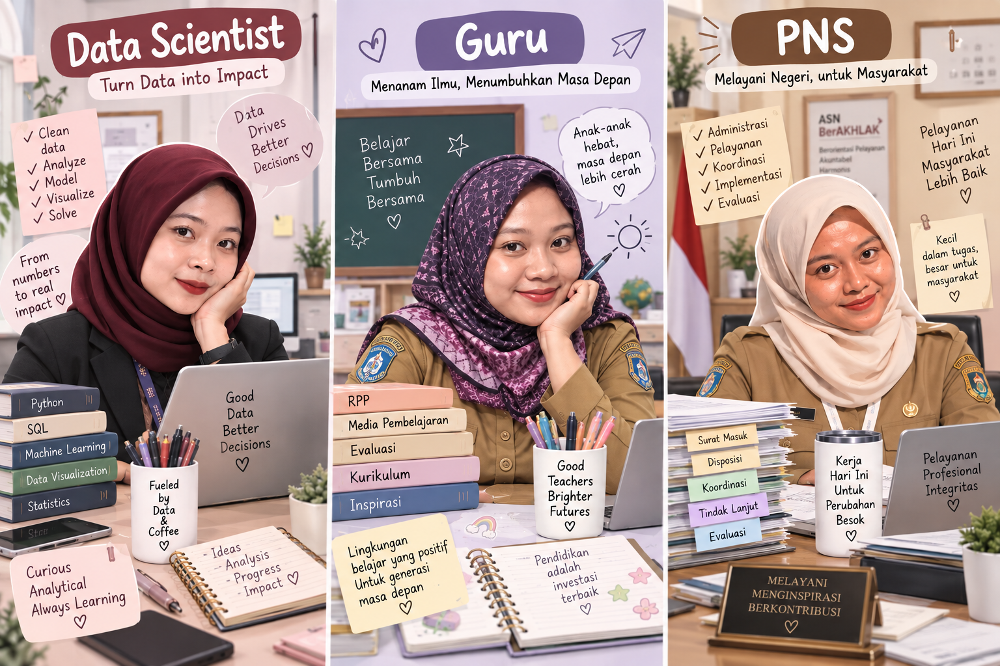
Dari satu kamar kos ungu, sekarang kita terpencar di Jakarta, Madiun, dan Riau.
Kak Yayang mengajar dan mengabdi sebagai guru di SMAN 1 Dolopo. Dan siapa sangka, cinta sejatinya berlabuh pada sesama rekan guru di sekolah yang sama!
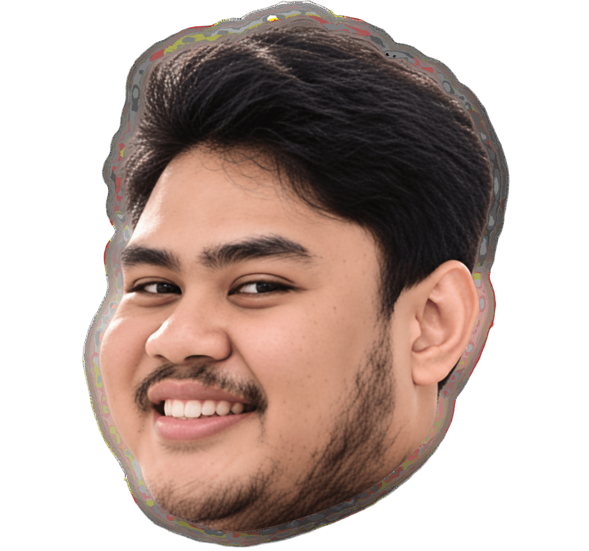
Mas RizkiKabar yang bikin kita berdua kaget, terharu, dan luar biasa bahagia!
Sebelum persiapan ke pelaminan, kita pancing dulu Mas Rizkinya buat siap-siap!
Ayo Kak Yayang, gunakan kail pancingmu dan pancing 5 Mas Rizki yang muncul dari lubang!
Mas Rizki sudah siap! Sekarang yuk bantu pasangkan perlengkapan pernikahan Kak Yayang!
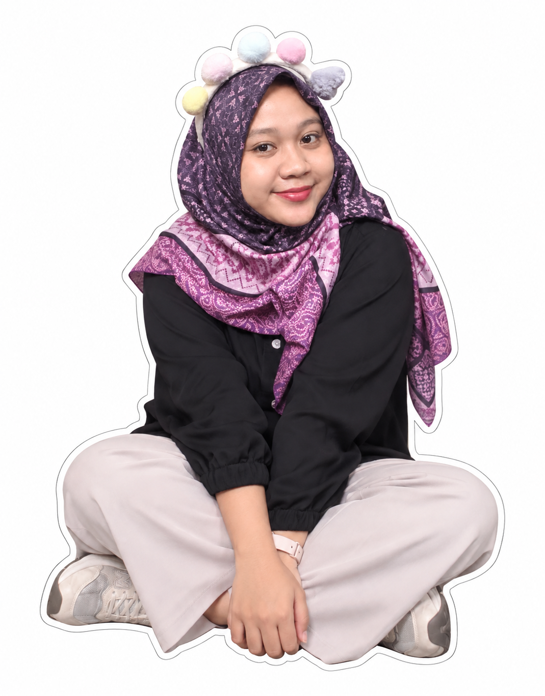
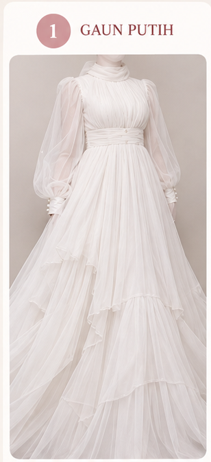
1. Gaun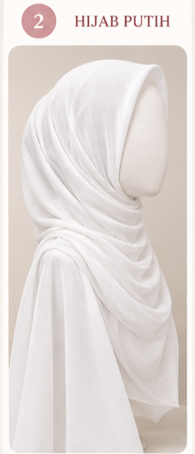
2. Hijab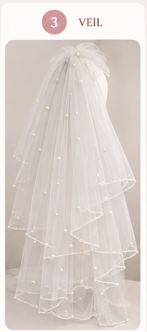
3. Veil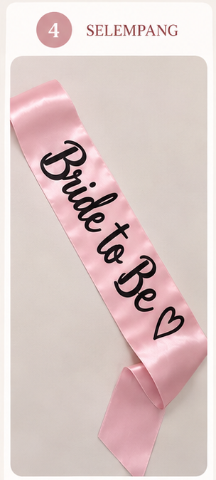
4. Selempang
Dari bangku MIPA 7, hebohnya Kos Ungu, drama nyariin Mocca di tengah hujan, sampai kita terpisah ribuan kilometer...
Hari ini kami hadir untuk merayakan hari paling bahagia buat Kak Yayang.
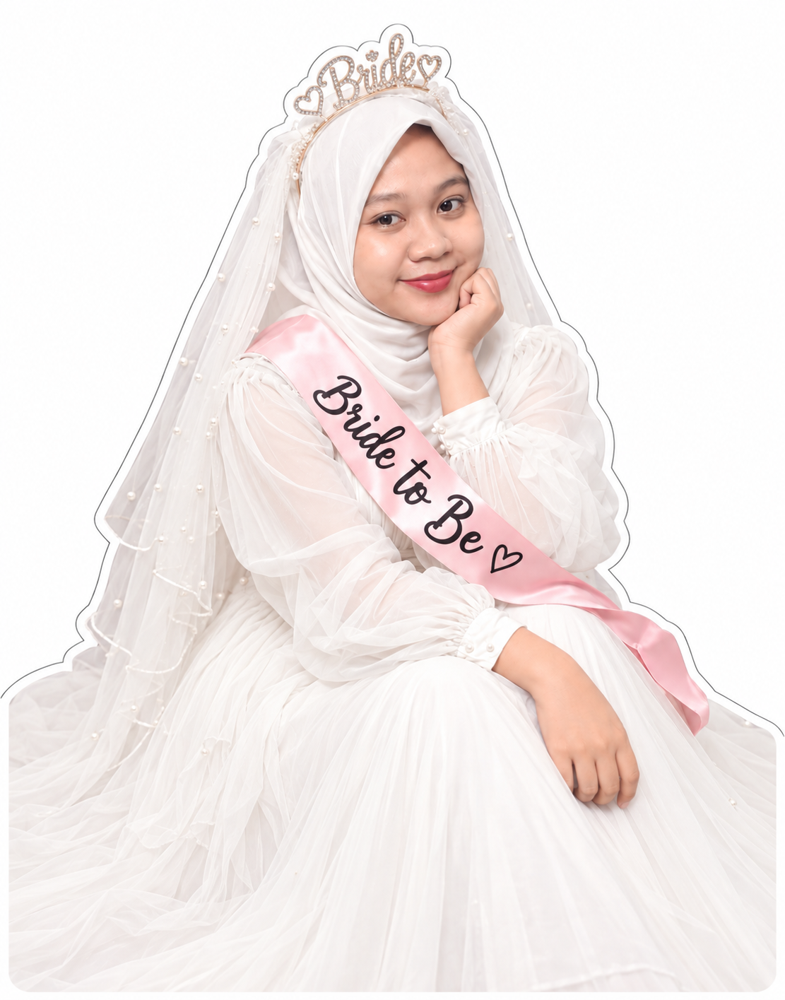
Kak Yayang“Sekarang, mari kita berdua gandeng dan antarkan Kak Yayang ke pelaminan...”
Biar makin menghayati langkah menuju pelaminan, kita putar lagu yang paling syahdu:
Duduk santai dan hayati momen ini: Riana & Dea mendampingi langkah Kak Yayang menuju Mas Rizki.
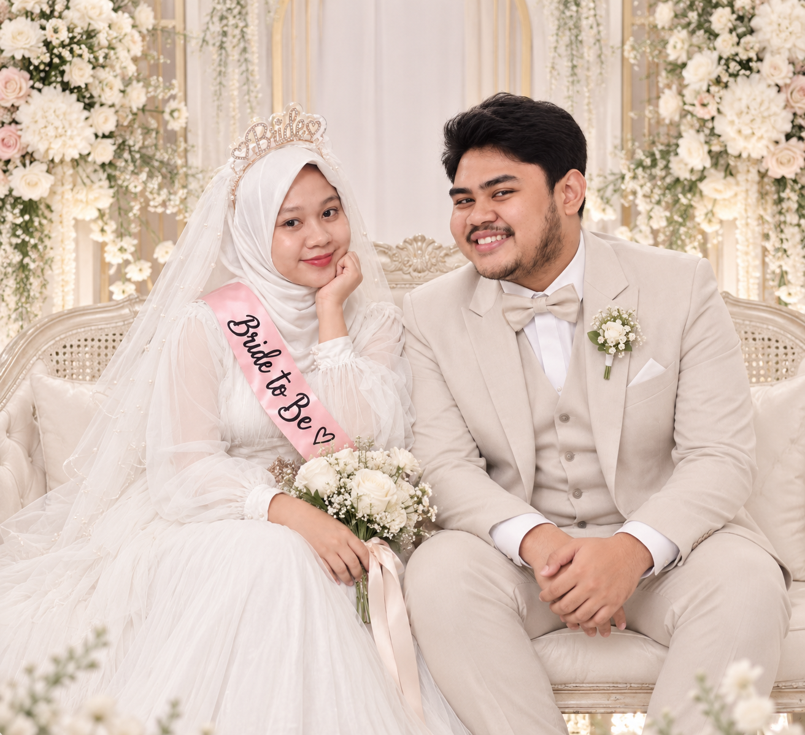
Dari kenangan MIPA 7, goreng telur di Kos Ungu, nyariin Mocca, sampai akhirnya Kak Yayang jadi manten secantik ini...
Semoga rumah tangga kalian selalu dipenuhi cinta, keberkahan, dan tawa bahagia selamanya.
— With Love: Riana, Dea & Mocca